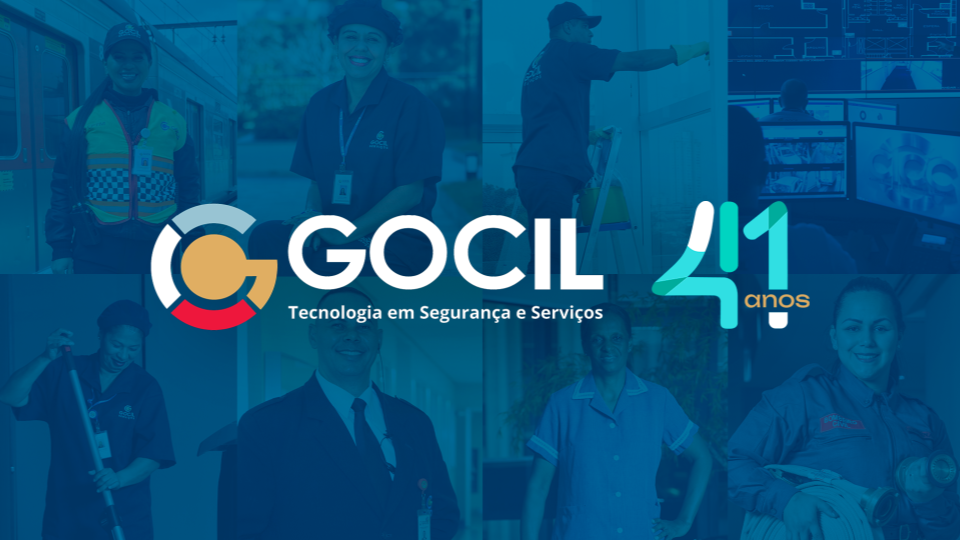
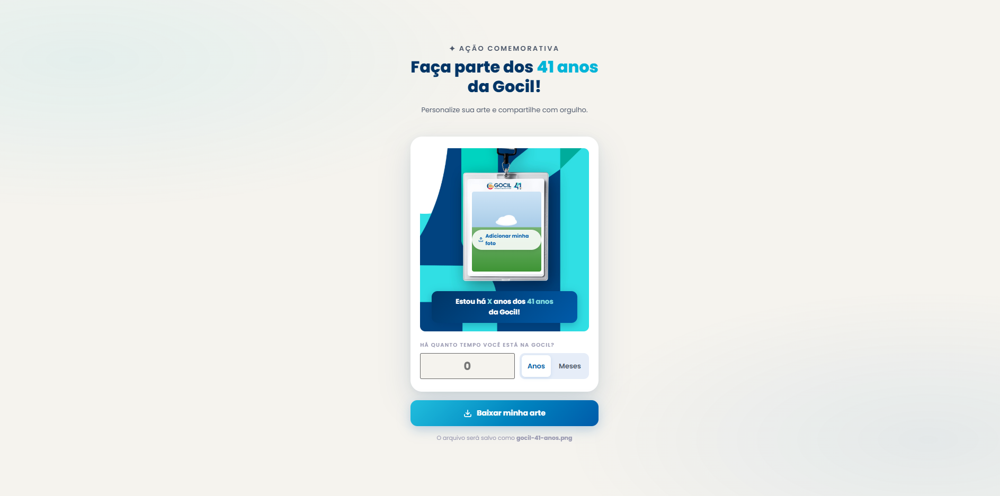
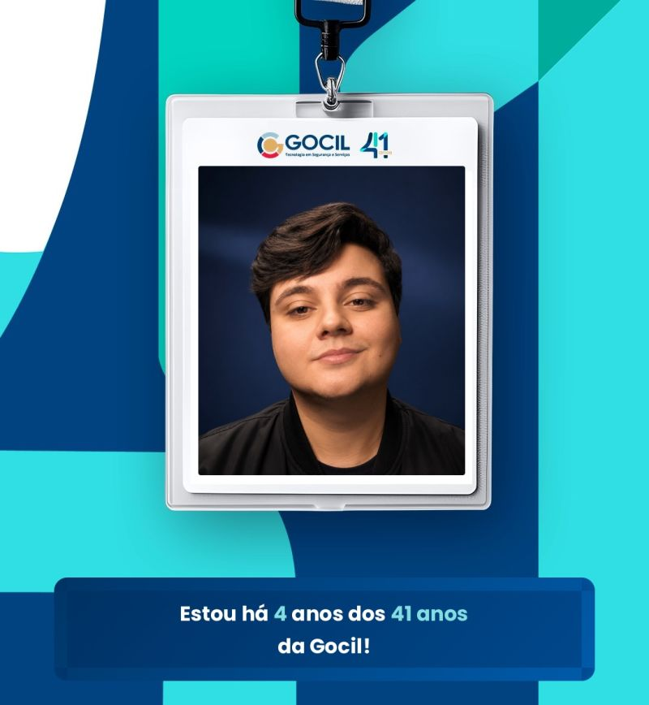
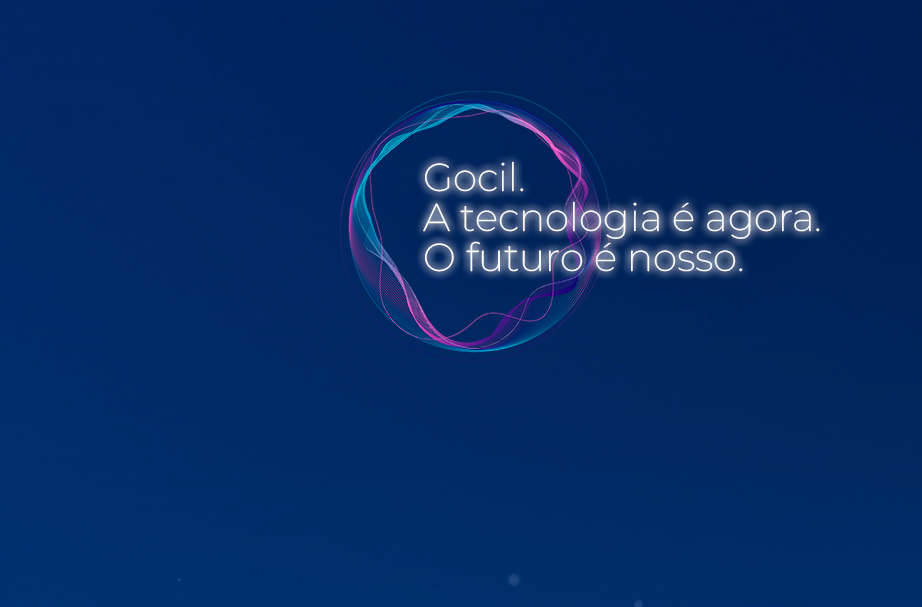
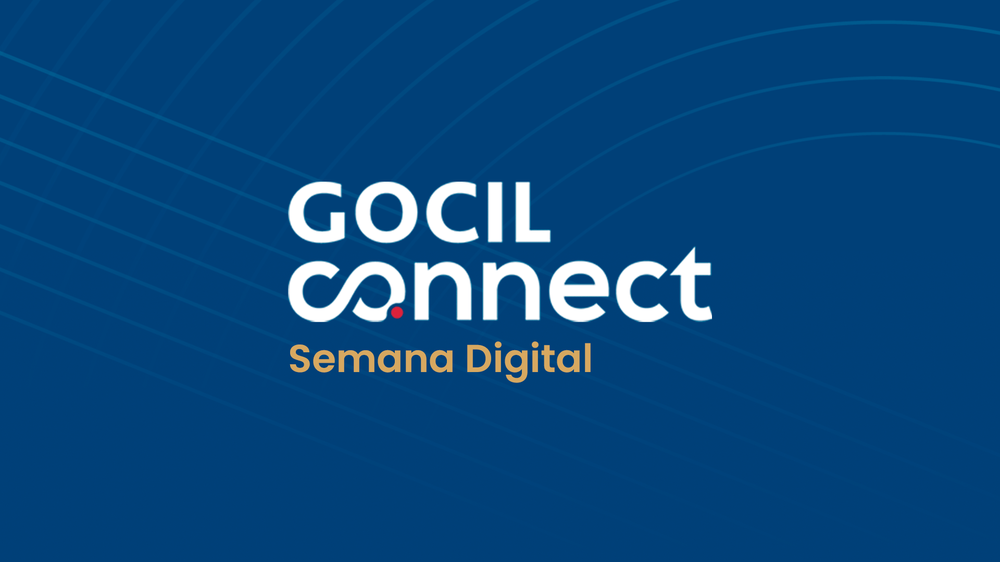
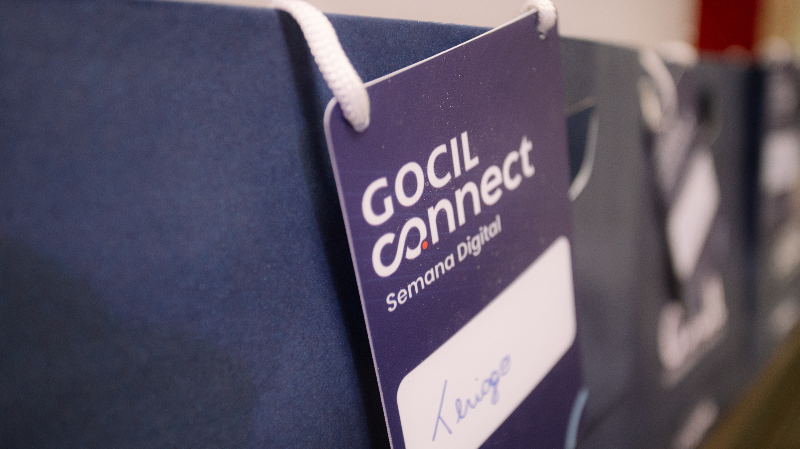
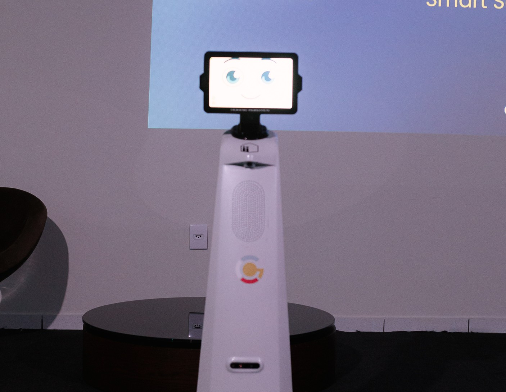
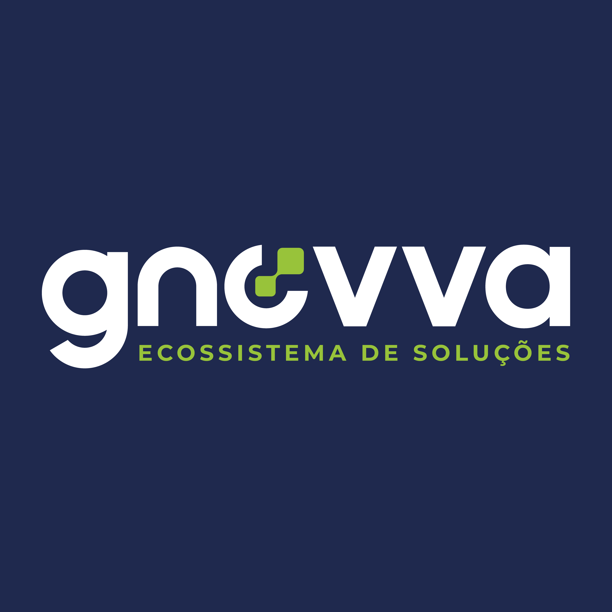
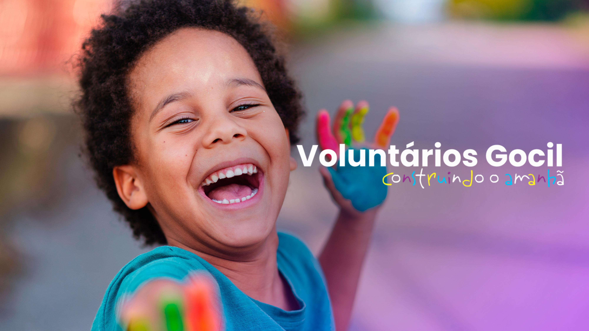

Portfólio Executivo
Head de Marketing e Comunicação
Construindo marcas.
Conectando pessoas.
Impulsionando transformações.
Sobre minha atuação
Sou profissional de Marketing e Comunicação, com experiência em liderança de equipes, branding, comunicação interna, marketing institucional, geração de demanda e estratégias digitais. Atuo conectando planejamento e execução, desenvolvendo campanhas, fortalecendo marcas, estruturando processos e apoiando áreas comerciais.

Capítulo 01
Transformando pertencimento
em reputação


Campanha de engajamento
A Gocil vivia um momento sensível. O desafio era mostrar ao mercado que, mesmo diante das dificuldades, o vínculo entre as pessoas e a marca permanecia forte.
gocil.com.br/41-anosEstratégia
Resultados
"Quando as pessoas são protagonistas, a marca ganha voz."

Capítulo 02
A tecnologia é agora.
O futuro é nosso.
Reformulação do site
Conduzi a reformulação completa do site da Gocil — reposicionando uma marca com mais de quatro décadas de história para inovação e tecnologia.
gocil.com.brCronograma
Impacto
"A tecnologia é agora. O futuro é nosso."

Capítulo 03
Conectar pessoas.
Conectar o futuro.
Edição 01 — Junho de 2025
Idealizei a primeira edição para aproximar Comercial e Operação e apresentar a nova Diretora Comercial para toda a companhia via transmissão ao vivo.
Edição 02 — Novembro de 2025
Transformei o evento em uma semana completa para preparar o time para a Nova Era — de prestadora de serviços a empresa de tecnologia.


Resultado Comercial
Valor Ganho
R$ 1,07 Mi
Valor Perdido
R$ 52,36 Mi
Valor Consolidado
R$ 128,55 Mi
Conversão de Valor
0,83%
Leads Ganhos
45
Oportunidades convertidas
Leads Perdidos
707
Pipeline descartado
Leads Abertos
255
Em andamento
Conversão Leads
4,47%
Taxa de fechamento
ANÁLISE MENSAL DE LEADS

Capítulo 04
Do naming
ao mercado.
Brand Building · Do zero ao mercado
Desenvolver uma nova empresa dentro do ecossistema Gocil — criando significado, identidade e presença digital do zero.
"Criar uma marca é criar significado."

Capítulo 05
Grandes marcas são
construídas pelo
impacto que geram.
Propósito em ação
Principais Legados
Reposicionamento digital da Gocil
Criação da marca GNOVVA
Implantação do Gocil Connect
Campanhas de engajamento e pertencimento
Fortalecimento da cultura organizacional
Projetos de impacto social
Integração entre marca, pessoas e negócios
Comunicação para +20 mil colaboradores
Desenvolvimento de matérias para o G1
Implantação de Comitê de Diversidade na Gocil
Eventos: ExpoSEC, SegSummit e Festa do Peão de Barretos
Minha visão
Mais do que campanhas, busco construir marcas, conectar pessoas e criar experiências capazes de gerar valor para empresas e para a sociedade.
VINÍCIUS DE LUCCA
Head de Marketing e Comunicação